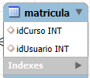
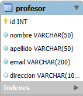

Documentacion de la creacion de la BDD con SQL
INTRODUCCIÓN
En esta pagina documentaré toda la creacion de la base de datos, ya que no
puedo subir la base de datos como tal, asi que voy a adjuntar los codigos y las capturas.
La base de datos está creada con MySQL Workbench.
He creado un total de 7 tablas.
- Usuarios
- Cursos
- Profesores
- Asignaturas
- Alumnos
- Profesores + Asignaturas + Cursos
- Matricula
Diagrama / Preparacion de BDD
He utilizado la web Draw.io para hacer mi esquema y como organizaría mi BDD
para gestionar la web, tanto los cursos como los usuarios.
Imagen PNG del diagrama:
Tabla Usuario
En la tabla usuarios, almacenare la informacion de la gente que se registre
en mi web, desde la pagina de LogIn.
Codigo:
create table usuario(
id int auto_increment primary key,
nombre varchar(50) not null,
apellido varchar(50) not null,
email varchar(200) not null,
direccion varchar(100),
contraseña varchar(10) not null
);
Tabla CURSO

En la tabla curso, almacenare los 3 cursos que ofrecerá la web.
Codigo:
create table curso(
id int auto_increment primary key,
nombre varchar(50) not null,
año year
);
Tabla MATRICULA

En la tabla matricula, almacenaré los datos del alumno matriculado en el curso, con X asignaturas y X profesores.
Codigo:
create table matricula(
idCurso int,
idUsuario int,
constraint fkCursoMatri foreign key(idCurso) references curso(id) on delete cascade,
constraint fkUsuarioMatri foreign key(idUsuario) references usuario(id) on delete cascade
);
Tabla PROFESOR

En la tabla profesor, almacenare los datos de los profesores.
Codigo:
create table profesor(
id int auto_increment primary key,
nombre varchar(50) not null,
apellido varchar(50) not null,
email varchar(200) not null,
direccion varchar(100)
);
Tabla ASIGNATURA

En la tabla asignatura, almacenaré todas las asignaturas que ofrece cada grado.
Codigo:
create table asignatura(
id int auto_increment primary key,
nombre varchar(50) not null
);
Tabla PROFESOR + ASIGNATURA
En la tabla de "mezcla", será la tabla que juntará las dos tablas con las
PK de cada tabla.
Codigo:
create table profasig(
id int auto_increment primary key,
idProfesor int,
idAsignatura int,
constraint fkProfe foreign key(idProfesor) references profesor(id) on delete cascade,
constraint fkAsig foreign key(idAsignatura) references asignatura(id) on delete cascade
);
Tabla ASIGNATURA + CURSO
En la tabla de "mezcla", será la tabla que juntará las dos tablas con las
PK de cada tabla.
Codigo:
create table asigcurso(
id int auto_increment primary key,
idCurso int,
idProfesor int,
constraint fkCurso foreign key(idCurso) references curso(id) on delete cascade,
constraint fkProfesor foreign key(idProfesor) references profesor(id) on delete cascade
);
Tabla FORMULARIO
En la tabla de formulario, será la tabla donde almacenará la informacion que rellene el usuario de la web.
Codigo:
create table formulario(
id int auto_increment primary key,
nombre varchar(20) not null,
email varchar(100) not null,
numeroTelefono char(9) null,
texto text not null
);
Resultado final de la creacion de las tablas